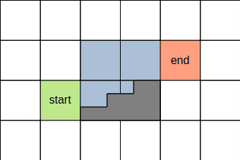
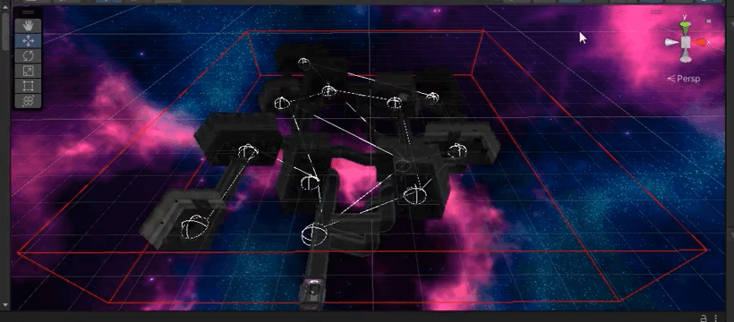

Scavenger Hunt is a third-person dungeon crawler where you play a scavenger who docks into an abandoned research vessel with the intent of looting it. Unfortunately the vessel isn't quite abandoned, it's inhabited by the former crew who have seemingly been infected by some unknown biological virus. Thankfully these crewmembers aren't that big of a threat, but there is an incredibly large and unkillable beast roaming the ship who is on the lookout for you.
This game was developed by three people, I myself was in charge of implementing:
The task of implementing AI and multiplayer was left to my other team members. I didn't do any work on the multiplayer code (besides making changes to existing code to make it easier to network), but I did directly assist my colleague who was working on the enemy and stalker AI.
Worth spending some time talking a bit about the procedural generation in this project. The way that it works is as follows: First, the map is considered to be a 3D grid, and a random amount of rectangular rooms are randomly placed in this grid. Rooms obviously are ignored if they overlap one another. Next, I generate a Delaunay tetrahedralization graph of the rooms, and then use a minimum spanning tree to ensure each room is reachable. A MST will not generate cycles, so I also randomly choose some extra edges to allow the rooms to connect to each other in loops. Finally, I use the A* algorithm to traverse the grid in order to generate the hallways.
A* in this scenario is a bit tricky because in 3D space, the pathfinder would probably try to connect rooms that are at different heights with vertical hallways. Instead, we need to generate staircases, and we have to ensure that said staircases don't intersect with one another or get placed directly underneath other hallways. To solve this problem, for the pathfinder to climb up a cell in the Z axis, it must do so by generating the following:

The blue cells are therefore considered ocupied, and the pathfinder must guarantee that the start and end cells are connected to a hallway. There's a bunch of other rules in the pathfinder which are accomplished with a custom cost function, like:
This animated GIF showcases the procedural generation:

After level generation, a navigation mesh is generated for the stalker to be able to traverse the level.
Since rooms are always completely enclosed by doors, I can optimize rendering by not drawing rooms if the doors are closed. This allows me to have plenty of dynamic lights and particles in these rooms without having to worry about the framerate suffering.
In terms of audio, the game has procedural music that works similarly to what I implemented in Shell Time (IE custom loop points, the music changes on beat, and only at the end of the current measure/bar of the song). There exists three main tracks, a calm song that plays before the player is spotted by the stalker, a heavy track that plays when the player is spotted, and a variant of the calm song that plays when the player managed to avoid the stalker. This is shown in this old video:
There is also some procedural sound being performed in the sfx of the final game: the echo of your footsteps/guns changes based on the ceiling height of the room/hallway, and enemies make muffled noises if they're behind walls. This is all possible thanks to the sound manager I wrote, which was similarly transferred over from Shell Time.
The game has a built-in tutorial covering the controls, but they will be written here just in case:
Besides the given controls, the following debug controls are available to aid the professors' evaluation:
Everything else was made by either me or my colleagues.
This project was unfortunately a bit rushed, and was essentially mostly put together in the span of 5 days with an all-nighter towards the end. This was not due to lack of caring, but rather I personally got very sick for two weeks and was unable to do any work whatsoever, and then by the time that I was feeling better the deadlines for all the projects and tests which I was supposed to have worked on during that time came crashing down. My colleagues were similarly quite busy, so we were left with having to squeeze in as much work as possible in such short time.
Due to the aforementioned crunch, quite a bit of the game was left in a state we weren't particularly happy with, but the resulting game is fully playable and working. We unfortunately had to skimp out on the story, and the multiplayer support was left in a bit of a buggy state. That being said, it was a fun project and I hope you have fun playing it!